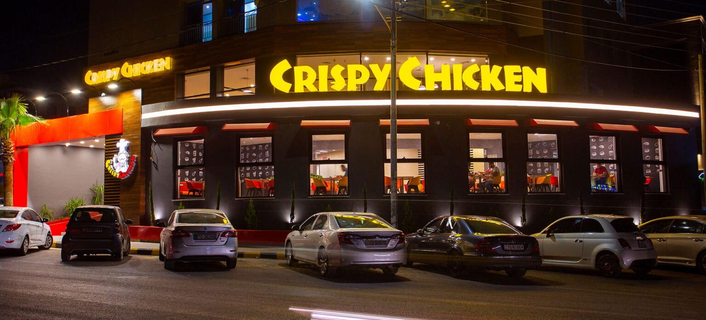

Crispy Chicken is a fast food restaurant chain serving fried chicken & Chicken Sandwiches. The company Hamburg International Restaurants Co. is headquartered in Amman, Jordan. The first restaurant was established in 2009 in Amman, JORDAN under the name of CRISHPY CHICKEN. Franchising started in 2016 in Abu Dhabi, currently 15 Stores are fully operated to serve our customers and we are still expanding in Jordan and regionally. We strive to achieve the optimum utilization of QUALITY of Product & Service , PRICE & TIME, our business model is based on maximizing value for money, and we strive to delight our customers and to serve the best fresh Chicken quality we can, all Crispy Chicken staff strongly believes in our slogan The finest Chicken in Town and our Teams are committed to do their utmost effort to achieve our objectives. Crispy Chicken provides fresh foods, big portions, good service, cheap prices and a multi-choice menu, which combines the most successful fast food restaurant products. All these add up to good value for money for customers, and generate increased brand loyalty. Our recipes of coated fried chicken are designed with a superior flavor to excite every customer. Our fresh chicken are marinated to give flavor right through to the bone. Crispy Chicken prides itself on never using processed chicken, only fresh whole pieces & fillets. They are then coated in breading made from the finest ingredients mixed with a unique blend of herbs, and our exclusive spices. They are then pressure fried to perfection. Pressure frying ensures as little oil as possible is absorbed into the product giving a delicious grease free product. But we haven’t just stopped there; we are constantly trying to improve our products to make them the best we can. Crispy Chicken store itself is also characterized by quality. Our theme designs provide that touch of originality, which draws customers to return time and time again. And we also offer a home delivery service from our stores.
